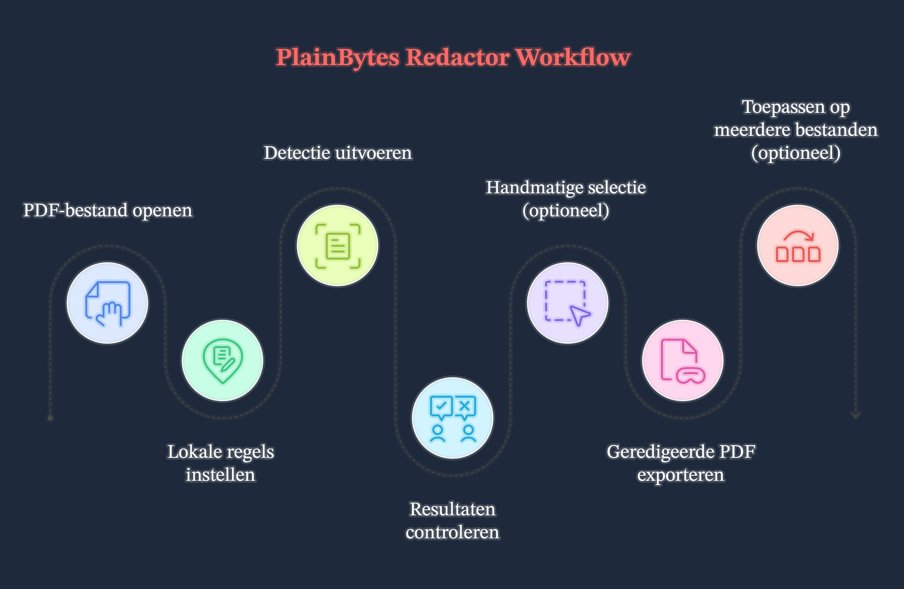

Geschreven voor de huidige Windows-desktopapp. Als iets hier afwijkt van de versie die u hebt geïnstalleerd, vertrouw dan op de interface in de app.
1. Waar deze app voor bedoeld is
1.1 Echte redactie vs. visueel afdekken
Deze twee benaderingen betekenen iets heel anders voor compliance en beveiliging:
Aspect
Visueel afdekken (de bekende “zwarte balk”)
Echte redactie (waar deze app op gericht is)
In de PDF
Tekst, vectoren of afbeeldingen kunnen nog steeds in het bestand staan, vaak alleen bedekt door een ander grafisch element.
Overeenkomende inhoud wordt uit de contentstream verwijderd, zodat die niet via normale parsing kan worden hersteld.
Kopiëren / zoeken
Afhankelijk van het hulpmiddel kan “verborgen” tekst nog steeds worden gekopieerd.
Het doel is dat selecteerbare tekst de gevoelige tekenreeksen niet meer bevat (controleer dit in het geëxporteerde bestand).
Het meest geschikt voor
Lezen op het scherm of snel tijdelijk afdekken.
Extern delen, archiveren, audits, due diligence: overal waar inhoud definitief weg moet zijn.
PlainBytes Redactor is gebouwd rond echte redactie. Gebruik Bevestigen om duidelijk aan te geven welke gebieden bij export echt worden verwijderd.
1.2 Wat we bedoelen met “lokaal en offline”
Het werk blijft op deze pc: het openen van de PDF, regelmatching, het schrijven van het geredigeerde bestand en validatie gebeuren allemaal lokaal.
Geen documentupload voor redactie: het product is niet ontworpen om uw bestanden als onderdeel van de redactiepijplijn naar de cloud te sturen.
Los van Help en updates: wanneer u Help, Controleren op updates of vergelijkbare menu-items opent, kan Windows uw browser of de Microsoft Store starten. Dat staat los van het offline houden van het redactiepad.
1.3 Wanneer dit goed past
Workflows in juridisch werk, finance, zorg, overheid of audit waar u menselijke controle en een kleiner lekoppervlak wilt.
U moet een PDF delen, maar id-nummers, rekeningnummers, contactgegevens en andere identificerende gegevens verwijderen.
U hebt veel PDF’s met dezelfde lay-out: na bevestiging in één “sjabloonbestand” kunt u Toepassen op meerdere bestanden gebruiken om dezelfde geometrie voor de rest te hergebruiken (zie stap G in §3 en §9).
2. Kernbegrippen
2.1 Redactiemarkeringen (RedactionMark)
Intern is elk gebied dat u mogelijk redacteert een redactiemarkering: denk aan “een rechthoek op een pagina plus metadata”.
Pagina en rechthoek: positie en grootte in PDF-coördinaten.
Status: in behandeling of bevestigd. Alleen bevestigde markeringen worden bij export verwijderd.
Bron: regels (patronen/regex) of handmatige selectie, zodat u automatische treffers kunt onderscheiden van wat u zelf hebt getekend.
Categorie en risico: gebruikt om te filteren, sorteren en bulkacties uit te voeren in de auditlijst.
2.2 Wat “bevestigen” betekent en waarom dit handmatig is
Automatisering beslist niet definitief: regelmatching kan normale tekst te vaak markeren of echte gevoelige gegevens missen. De app gaat dus nooit uit van “alles wat gevonden is moet weg”.
Bevestigen = goedkeuren na controle: zodra een markering is bevestigd, wordt die opgenomen in de exportset; alles wat in behandeling blijft, geldt niet als definitief.
Past bij echte controleprocessen: deze extra stap sluit aan op vierogencontrole, auditsporen en voorkomt dat per ongeluk met één klik een hele pagina wordt gewist.
2.3 De batchbasis
Er is geen workflow om “dit als benoemd sjabloonbestand op te slaan en later te kiezen”. Batch gebruikt een geometrische basis in het geheugen: wanneer u via Toepassen op meerdere bestanden naar batch gaat, zet de app elke bevestigde markering in het huidige document om in een genormaliseerde rechthoek (pagina + coördinaten relatief aan de paginagrootte), alleen voor die batchsessie.
Voor elke PDF in de wachtrij past de batchengine alleen die rechthoeken toe: er wordt geen nieuwe volledige regeldetectie per bestand uitgevoerd.
Wanneer dat werkt: meerdere exports uit hetzelfde systeem met dezelfde lay-out en gevoelige gebieden op dezelfde plekken (bijvoorbeeld uniforme overzichten). Als de lay-out verschuift, kunnen kaders verkeerd terechtkomen: controleer de eerste uitvoer steekproefsgewijs.
Regels in het centrum: ze helpen treffers te vinden in de huidige workflow voor één bestand; ze worden niet automatisch opnieuw uitgevoerd voor elk bestand in de wachtrij. Batch gebruikt de bevestigde posities die u al hebt vastgelegd.
3. Volledige workflow
Voorbeeldsituatie
In dit voorbeeld moet een juridisch reviewer een PDF voor uitdiensttreding van een medewerker van 8 pagina’s extern delen. Mobiele nummers, delen van bankkaartnummers en persoonlijke e-mailadressen moeten worden verwijderd. Het bestand is een echte elektronische PDF met selecteerbare tekst, geen platte scan.

Workflow in één oogopslag
Stap A: open het document
Gebruik Openen of sleep het bestand naar de app om de PDF te laden (gangbare afbeeldingsformaten worden ook ondersteund; het pad door de app kan verschillen).
Alles — voorbeeldweergave, detectie en markeringen — is gekoppeld aan dit ene bronbestand, dus open de versie die u echt wilt redigeren.
Stap B: kies regio en scenario in het regelcentrum
Open Regels, kies een regio (land/gebied) en daarna een bedrijfsscenario (algemeen, financieel, enz.). Schakel ingebouwde regels in of uit, of voeg aangepaste regels toe als dat nodig is.
De effectieve regelset verandert met regio en scenario; een verkeerd scenario kan nuttige regels uit laten of extra ruis geven. U kunt voorkeuren opslaan voordat u sluit, zodat het volgende vergelijkbare document sneller gaat.
Stap C: detectie uitvoeren
Klik rechts onder scanbeleid op Detectie starten (of de gelijkwaardige knop) en wacht tot het documentmodel en de volledige analyse klaar zijn.
Regeltreffers worden dan een lijst met markeringen in behandeling. Als u regio, scenario of regels wijzigt, voer detectie dan opnieuw uit zodat de lijst klopt.
Stap D: controleren in de auditlijst
Loop in de auditlijst rechts de items één voor één na of gebruik filters. Bevestig wat weg moet; haal de bevestiging weg of verwijder rijen bij fout-positieven (de exacte bediening hangt af van de versie). Gele overlays in de voorbeeldweergave blijven meestal synchroon: klikken kan de bevestigingsstatus wisselen.
Deze stap voorkomt dat u het verkeerde verwijdert of iets laat staan; export gebruikt alleen bevestigde markeringen.
Stap E: kaders tekenen voor gemiste inhoud
Sleep rechthoeken in de voorbeeldweergave links over alles wat regels niet vonden, maar waarvan u weet dat het geredigeerd moet worden. Pas selectiekleuren aan als dat helpt op drukke achtergronden.
Automatische detectie vindt niet alles; handmatige kaders zijn uw veiligheidsnet.
Stap F: exporteren
Kies Geredigeerd exporteren, kies een opslaglocatie en lees de voltooiingssamenvatting (aantal verwijderde items, metadata-opruiming, validatiemeldingen).
U krijgt een kopie die klaar is om te delen; de samenvatting is een snelle controle. Als er waarschuwingen zijn, open dan de geëxporteerde PDF en controleer steekproefsgewijs.
Stap G (optioneel): toepassen op meer bestanden
Nadat alles wat geredigeerd moet worden in deze PDF bevestigd is, gebruikt u Toepassen op meerdere bestanden (of de gelijkwaardige ingang). De app bouwt de hierboven beschreven genormaliseerde basis en opent batchredactie. Voeg meer PDF’s met dezelfde lay-out toe, stel een uitvoermap in, kies of metadata moeten worden verwijderd en start.
Als lay-outs echt overeenkomen, hoeft u dezelfde bevestigingen niet bestand voor bestand opnieuw te doen; batch verwijdert fysiek nog steeds de omkaderde gebieden. Belangrijk: dit is geen herbruikbaar benoemd sjabloon op schijf. Er is geen apart sjabloonbestand; de basis komt uit dit bevestigde document. Batch voert ook geen regeldetectie opnieuw uit per bestand in de wachtrij. Als de lay-out van een bestand is veranderd, ga dan terug naar de workflow voor één bestand.
4. Rondleiding door het hoofdvenster
Hoofdvenster
4.1 Voorbeeldweergave (links)
Doel: toont elke pagina van de PDF (of afbeelding), zodat paginanummers en lay-out overeenkomen met het bestand.
Markeringen: automatische en handmatige gebieden in behandeling worden gemarkeerd; klikken op een gebied wisselt vaak de bevestigingsstatus samen met de lijst (gele aanduiding hangt af van de versie).
Handmatige kaders: klik en sleep in de voorbeeldweergave om een rechthoekige markering toe te voegen.
4.2 Paneel voor scanbeleid
Doel: startpunt voor detectie (bijv. Detectie starten), afgestemd op regio, scenario en regelsets uit het centrum.
Waarom apart: houdt “wanneer het hele document scannen” gescheiden van “hoe met de auditlijst werken”, wat verwarring vermindert.
Let op: dit is alleen visuele hulp; redactie hangt nog steeds af van bevestiging en export.
4.4 Auditlijst
Doel: verzamelde gevoelige treffers voor het geopende document, met filters op categorie en risico, plus bevestigen/wissen per rij of in bulk.
Synchronisatie met voorbeeld: selecteren of handelen op een rij scrolt/markeert meestal de pagina; klikken op een markering in de voorbeeldweergave werkt de lijststatus bij.
4.5 Werkbalk (van boven naar beneden)
Openen: kies een lokale PDF of ondersteunde afbeelding.
Document sluiten: sluit het huidige bestand.
Vorige / volgende pagina: gebruik de werkbalk. Op de pagina voor één bestand worden Page Up / Page Down apart verwerkt voor scrollen in de voorbeeldweergave (zie §7.3).
Regels: opent het regelcentrum.
Batch: opent batchredactie.
Geredigeerd exporteren: beschikbaar wanneer er bevestigde markeringen zijn.
Meer (⋯): taal, Help, feedback, updates, Over, enz.
De statusbalk toont onder meer of de app gereed is en de huidige bestandsnaam.
Bedrijfsscenario: vernauwt of benadrukt regelbundels (algemeen, financieel, zorg, juridisch/overheid), zodat standaardinstellingen passen bij het documenttype.
Samen: stel eerst de regio in en daarna het scenario; voer na wijzigingen detectie opnieuw uit, anders kijkt u mogelijk nog naar een oude analyse.
5.2 Ingebouwde vs. aangepaste regels
Ingebouwd: meegeleverd met de app, gegroepeerd (identiteit, finance, adres, contact, …), per regel aan/uit te zetten, gebaseerd op lokale data en volledig offline.
Aangepast: uw label plus een patroon — gewone substring (hoofdletterongevoelig) of .NET-reguliere expressie. Handig voor interne codes die de ingebouwde regels niet kennen. Er kan een maximum zijn voor hoeveel u kunt toevoegen.
5.3 Wanneer u regels aanpast
Te veel ruis: schakel te brede regels tijdelijk uit of kies een beter passend scenario.
Hetzelfde patroon blijft terugkomen en geen ingebouwde regel past: voeg een aangepaste regel toe om handmatig kaderen te verminderen.
Verlopen configuratie: Standaarden herstellen wist lokale overschrijvingen (u wordt om bevestiging gevraagd).
6. Audit-zijbalk
6.1 Waarom bevestiging zo werkt
Een rij groepeert vaak meerdere voorkomens van hetzelfde gevoelige type of dezelfde sleutel over pagina’s; bevestigen betekent dat al die plekken moeten worden verwijderd.
In behandeling houdt “modelinschatting” gescheiden van “menselijke beslissing”, zodat niets in bulk wordt geschreven zonder controle.
De exportengine gebruikt bewust alleen bevestigde markeringen.
6.2 Filters en bulkbevestiging
Filter: beperk op categorie of risico, zodat u eerst hoge risico’s of één veldtype aanpakt (bijv. alleen contact).
Bulk: wissel de bevestigingsstatus voor alles wat zichtbaar is onder het huidige filter (tekst hangt af van de versie). Handig wanneer een hele groep duidelijk goed of fout is.
Tip: controleer het actieve filter vóór een bulkactie, zodat u geen rijen meeneemt die u niet bedoelde.
6.3 Risiconiveaus
Niveaus (bijv. kritiek, hoog, verdacht, middel, laag) helpen bij sorteren en filteren, zodat de riskantste treffers eerst boven komen. Ze verplichten niet tot bevestigen: u beslist nog steeds wat u redacteert.
7. Handmatige selecties
7.1 Wanneer u zelf kaders tekent
Regels hebben iets gemist waarvan u weet dat het weg moet: handgeschreven foto-aantekeningen, afwijkende lay-outzones, enz.
Treffers zijn gefragmenteerd of verkeerd uitgelijnd: verwijder de slechte automatische rijen en teken een strakker kader.
Alleen gescande inhoud die als afbeelding wordt behandeld: gedrag verschilt van tekst-PDF’s; vaak gebruikt u handmatige kaders (zie veelgestelde vragen).
7.2 Werken met automatisch gedetecteerde markeringen
Een praktische volgorde: detectie uitvoeren → de auditlijst gebruiken om duidelijke fout-positieven te wissen en patronen te herkennen → enkele handmatige kaders toevoegen voor echte missers → de voorbeeldweergave pagina voor pagina snel controleren. Handmatige en automatische markeringen worden bij export hetzelfde behandeld; belangrijk is of ze bevestigd zijn.
7.3 Sneltoetsen (voorbeeldweergave en markeringen)
Wanneer de pagina voor één bestand geladen is, registreert deze PreviewKeyDown op het hoofdvenster. De onderstaande sneltoetsen werken alleen met een geopend document en wanneer de app niet bezig is. Ze zijn niet gekoppeld aan de knoppen vorige/volgende pagina op de werkbalk.
Toets
Actie
Tab
Volgende redactiemarkering.
Shift + Tab
Vorige redactiemarkering.
←↑→↓
Zonder modifiers: ←↑ selecteren de vorige markering, →↓ de volgende. Met een modifier ingedrukt: alleen ↑↓ scrollen de voorbeeldweergave met een vaste stap; ←→ worden in die tak niet verwerkt.
Enter
Zonder modifiers: bevestiging van de geselecteerde markering wisselen.
Delete
Zonder modifiers: de geselecteerde markering verwijderen.
Page Up / Page Down
Scrollt de voorbeeldstapel ongeveer één vensterhoogte.
Home / End
Springt naar boven / beneden in de voorbeeldweergave.
8. Exporteren
8.1 Checklist vóór export
Controleer dat dit het bestand is dat u wilt vrijgeven (aantal pagina’s, bijlagen).
Alles wat geredigeerd moet worden is bevestigd; alles wat zichtbaar moet blijven is gewist of uit de lijst verwijderd.
U hebt belangrijke pagina’s visueel gecontroleerd in de voorbeeldweergave, inclusief scans of afwijkende secties die u handmatig hebt omkaderd.
U weet dat export een nieuw bestand schrijft (of naar het gekozen pad) en doorgaans het origineel niet overschrijft; het gedrag volgt het opslagvenster.
8.2 Waarom metadata verwijderen
Naast pagina-inhoud bevatten PDF’s vaak auteur, producer, tijdstempels, XMP en meer. Tekst redigeren maar metadata laten staan kan nog steeds interne accounts of bewerkingsgeschiedenis lekken. De app kan dit bij export opschonen (en optioneel in batch). Voor alles wat de organisatie verlaat, is het meestal verstandig metadata opschonen aan te laten wanneer de interface dat aanbiedt.
8.3 De samenvatting lezen
Klopt het aantal fysiek verwijderde items met wat u zag?
Vermeldt de samenvatting dat metadata is gewist?
Als u waarschuwingen voor tekstvalidatie ziet, heeft automatische steekproefcontrole iets vreemds gevonden: open de geëxporteerde PDF en controleer. Beschouw de samenvatting alleen niet als bewijs dat er niets is achtergebleven.
9. Batchverwerking
9.1 Wat de batchmodus echt doet
Nadat u via Toepassen op meerdere bestanden met een basis binnenkomt, volgt elke PDF in de wachtrij een pad waarbij alleen rechthoeken worden toegepast: genormaliseerde rechthoeken worden per pagina omgezet naar absolute coördinaten, markeringen worden gemaakt, inhoud wordt fysiek verwijderd en metadata kan optioneel worden gewist. Er wordt geen regeldetectie opnieuw per bestand uitgevoerd.
De regels die u in de modus voor één bestand gebruikte, hielpen dus om op het sjabloon te vinden en te bevestigen; batch kopieert simpelweg waar u bevestigde naar andere bestanden met dezelfde geometrie.
9.2 Geschikte toepassingen
Veel PDF’s uit één systeem met dezelfde lay-out en gevoelige gebieden op dezelfde relatieve posities.
U hebt detectie en bevestiging al voltooid op één voorbeeld en wilt dat werk niet herhalen op bijna identieke kopieën.
9.3 Aandachtspunten
Geen opgeslagen sjabloonbestand: het sluiten van het batchvenster laat de basis in het geheugen vervallen; begin de volgende keer opnieuw via Toepassen op meerdere bestanden.
Als u Batch via de werkbalk opent zonder dat pad, hebt u mogelijk geen basis; Start kan dan uitgeschakeld blijven.
Kleine lay-outverschuivingen kunnen gemiste of verkeerde gebieden opleveren; controleer de eerste uitvoer steekproefsgewijs.
Schakel eigenschappen en verborgen gegevens wissen in wanneer dit wordt aangeboden voor extern delen.
Sommige documenttypen of licentieniveaus kunnen batch beperken; als Toepassen op meerdere bestanden grijs is, is dat het signaal.
10. Veelgestelde vragen
10.1 Waarom zijn er zoveel fout-positieven?
Regelmatching gebruikt heuristiek: tekenreeksen die gevoelig lijken, plaatsnamen die botsen met persoonsnamen, tabelfragmenten, enzovoort. Scenario/regels bijstellen, een ruisende regel uitzetten of bevestiging in de lijst wissen krijgt dit meestal onder controle. Handmatige bevestiging is bewust: het verkleint de kans dat u met één klik iets verwijdert dat u nog nodig hebt.
10.2 Hoe zit het met gescande PDF’s?
Als de PDF eigenlijk een pagina-afbeelding is zonder echte tekstlaag, heeft regeldetectie minder om mee te werken. U zult dan vaker handmatige kaders gebruiken of de raster-specifieke workflow die de versie biedt (volg de aanwijzingen op het scherm). Het helpt om vooraf te weten of u met een digitaal geboren PDF of een scan werkt.
10.3 Kan ik afbeeldingen redigeren? Waarom wordt tekst in foto’s niet herkend?
Ja. Gangbare afbeeldingsformaten kunnen als document worden geopend; u blijft voorbeeldweergave, markeren en exporteren gebruiken. Om installatiegrootte en runtimekosten redelijk te houden, bevat deze versie geen OCR: tekst in foto’s wordt niet selecteerbaar, waardoor regelgebaseerde detectie nauwelijks van toepassing zijn. Redigeer gevoelige gebieden door kaders te tekenen (en gebruik sneltoetsen om tussen markeringen te bewegen). Als u “herkennen en daarna matchen” nodig hebt, voer dan eerst elders OCR uit of lever een PDF met tekstlaag aan.
10.4 Hoe controleer ik een export snel?
Probeer in een PDF-lezer alles selecteren / kopiëren en zoeken naar tekenreeksen waarvan u weet dat ze gevoelig waren.
Controleer visueel kopteksten, voetteksten en voetnoten.
Lees de exportvalidatiesamenvatting van de app; als die waarschuwt, controleer dan eerst die pagina’s.
Gebruik bij zeer gevoelige situaties de gebruikelijke controles van uw organisatie: tweede tool, printcontrole, enz.